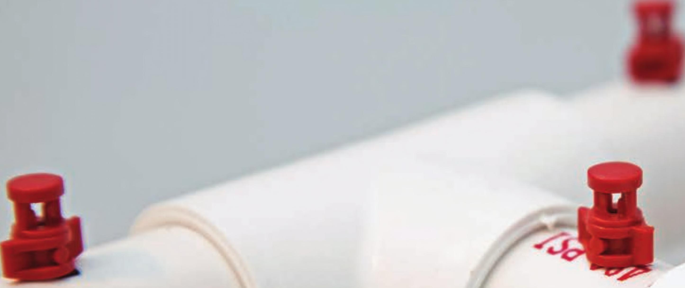
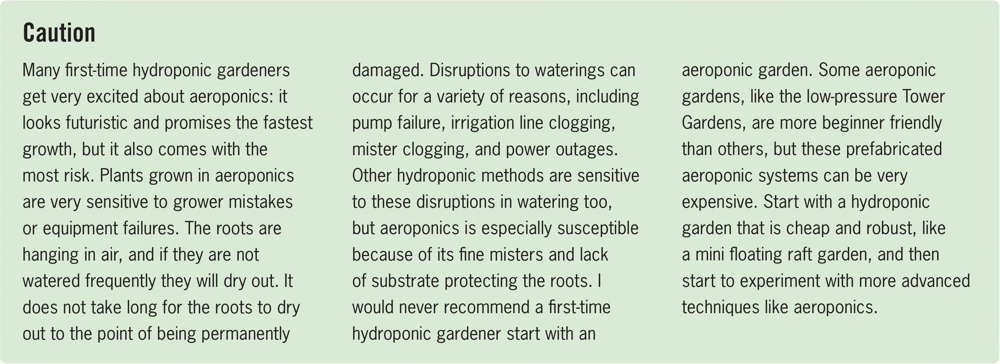

Caution Many first-time hydroponic gardeners get very excited about aeroponics: it looks futuristic and promises the fastest growth, but it also comes with the most risk. Plants grown in aeroponics are very sensitive to grower mistakes or equipment failures. The roots are hanging in air, and if they are not watered frequently they will dry out. It does not take long for the roots to dry out to the point of being permanently damaged. Disruptions to waterings can occur for a variety of reasons, including pump failure, irrigation line clogging, mister clogging, and power outages. Other hydroponic methods are sensitive to these disruptions in watering too, but aeroponics is especially susceptible because of its fine misters and lack of substrate protecting the roots. I would never recommend a first-time hydroponic gardener start with an aeroponic garden. Some aeroponic gardens, like the low-pressure Tower Gardens, are more beginner friendly than others, but these prefabricated aeroponic systems can be very expensive. Start with a hydroponic garden that is cheap and robust, like a mini floating raft garden, and then start to experiment with more advanced techniques like aeroponics. trellis. Long-term crops also have a greater chance of facing a power outage or an equipment failure that could quickly damage roots or kill plants that may have required many months of care. LOCATIONS Aeroponics is suitable for any location. Aeroponic gardens can be small and fit on kitchen counters or be massive vertical towers stretching over 15 feet tall. DIY aeroponic gardens can sometimes have issues with leaks and they should be tested before being placed in a leak-sensitive location. HYDROPONIC GROWING SYSTEMS 107

